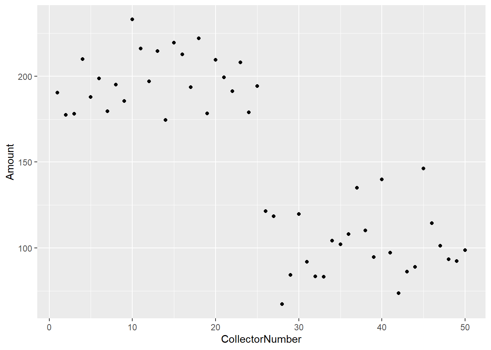
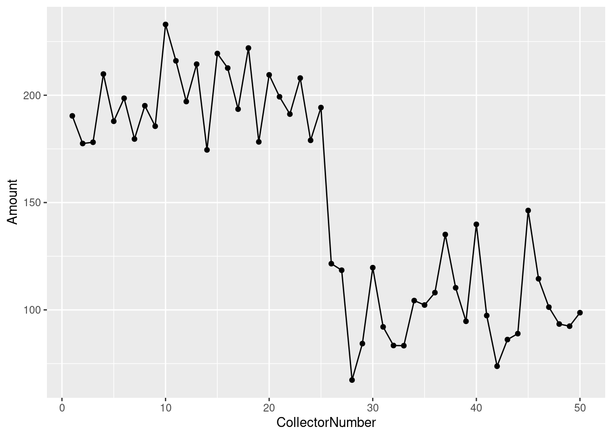
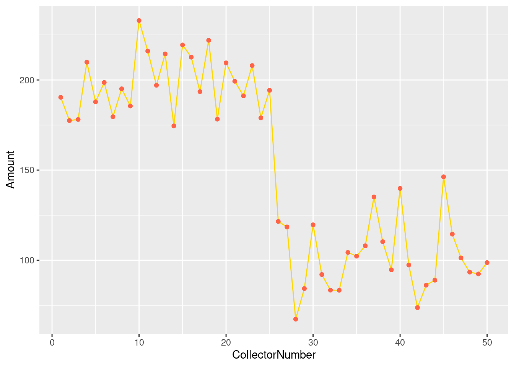
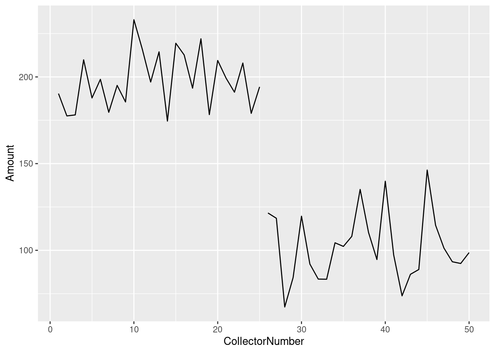
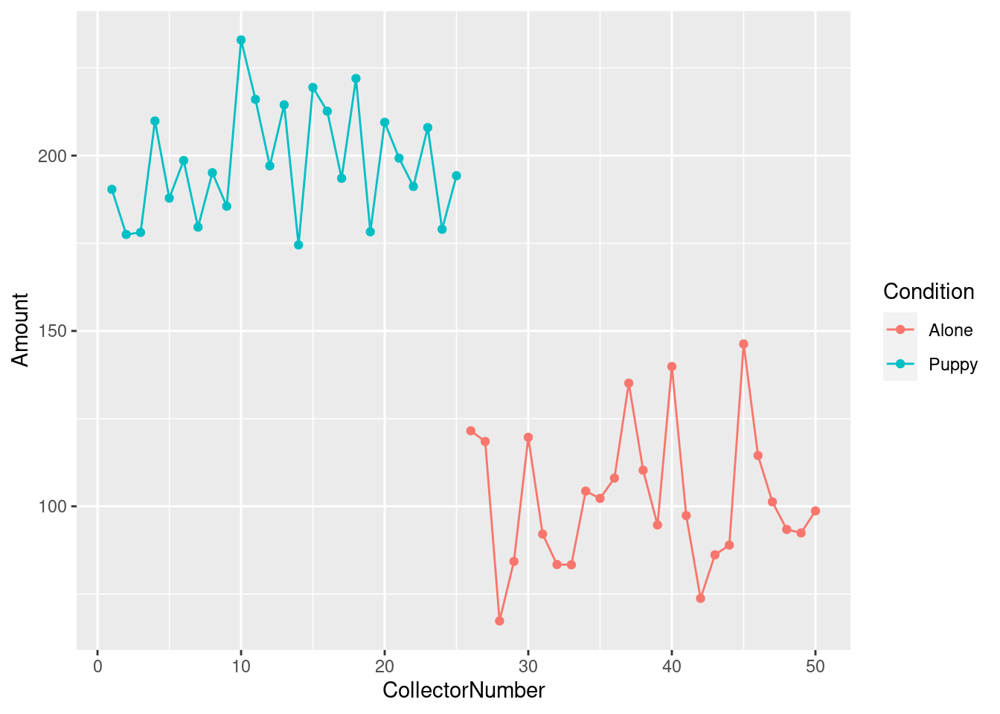
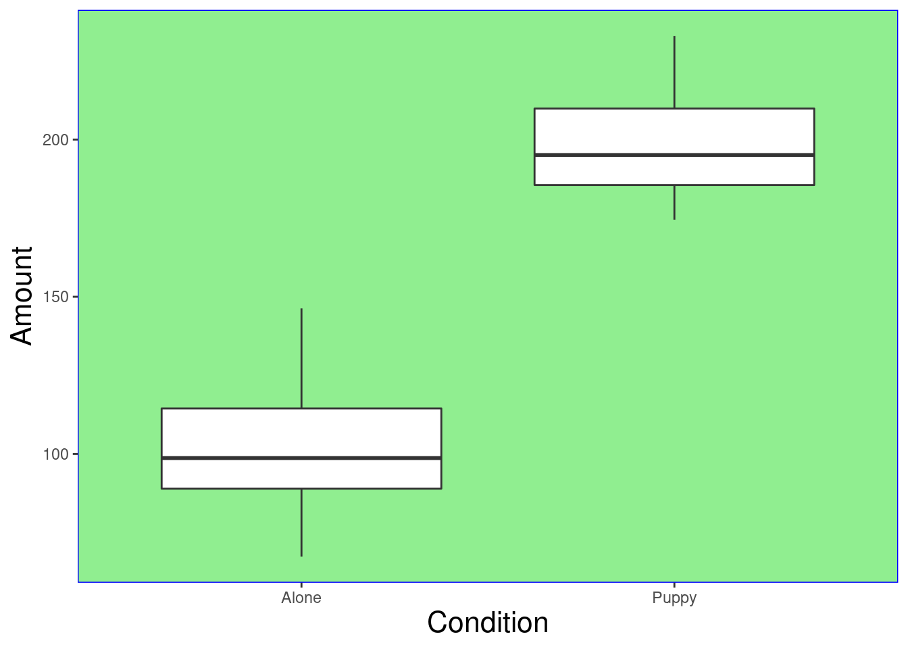

Data Focus
Modules and Handouts 2–6 cover topics that are part of the data
analysis journey and are all interrelated to one another. The way that
it has been separated is to introduce main topic but then each
subsequent topic will add in additional content for previous topics.
E.g. we start with data visualisation to introduce the basics of the
plotting systems but then each other handout will include extra options
and customisations.
Handout: Handout 02 - Visualising
Data
Associated Readings:
Tabular Data
In this module we begin to work with complete tables of data, and
learn how to make informative graphs. We begin by getting our scientific
research data into RStudio. Commonly, we first enter our data into Excel
for cleaning and organising, and save it out as a csv (comma separated
values) file. We then import the file into R for data analysis. We will
provide the csv file to be used with this document.
Note that in this document we are using Base R (the R functions that
are automatically available in RStudio). These Base R functions are
simple to work with, and are a good way to get familiar with R. In later
modules, we will meet some more sophisticated R tools which, while more
complicated, can also be more efficient.
Work carefully through each of the sections below, confirming that
all your outputs match ours. When you feel completely comfortable with
the content, move on to R for Data Science: Data Visualisation (https://r4ds.had.co.nz/data-visualisation.html) which
covers advanced plotting with the ggplot library.
When you have completed this module, you should be ready to produce
the graphs and figures you will need for your in-course research
projects. If you run into any problems or have any questions, email us,
and/or come to the drop-in session Monday 10.00 to 12.00 in the Science
Library Seminar Room.
Preparation - Do this very carefully
Document organisation is vitally important. We suggest that you keep
a separate folder for each R4SSP module. To do this, you can set up a
formal RStudio project (see for example https://support.rstudio.com/hc/en-us/articles/200526207-Using-Projects).
But if you don’t feel quite ready for that, you can just collect your
script file and data files together in a folder. Proceed as follows:
Launch R Studio
Following the procedure from Using a Script File
in Module 2 - Get Started with R, create a script file and save it to
your desktop or other location where you will be able to find
it.
Quit R Studio
Locate the script file you just made (it will have a .R file
suffix).
Create a new folder (name it something sensible) and place the
script file in it.
Retrieve the sample csv data file used in this module from the
course github repository . Place the csv file into your data
folder.
Or you can download the file directly using R:
download.file(url = "https://raw.githubusercontent.com/rtis-training/2022-s1-r4ssp/main/data/r4ssp_donations_data.csv",
destfile = "data/r4ssp_donations_data.csv")
Please note this assumes you are using the project and structure
created in the last handout. Importantly if this doesn’t work for you
check that the “data” folder exists and matches exactly.
- Open the folder and double-click on your script
file to open it in RStudio.
If you set things up this way, RStudio will be able to find your data
file for the next step – importing data.
Importing a data file
The provided file r4ssp_donations_data.csv contains
the (fictitious) results of a study designed to explore the factors
which affect donations to street-corner charity collectors. Fifty
student researchers each spent four hours at one of 50 randomly selected
positions on George Street, collecting donations for Blind Low
Vision NZ Guide Dogs, an organisation that raises and trains
service dogs. Twenty-five of the collectors were accompanied by guide
dog puppies; the other 25 were alone. Assignment to the Puppy or Alone
conditions was done randomly. Each researcher recorded the total amount
of money collected during their four hour shift. The start of the data
file is shown below.
We will import this file into R for some preliminary data
analysis.
To import a csv file into R we can use the function
read_csv. Like the R functions we used in Module 2,
read_csv accepts an argument between its round brackets.
The argument is the name of the input file. Because the name of the file
is a string, we surround it with double quotes. We will therefore
say:
read_csv("r4ssp_donations_data.csv")
However, we are not quite ready to run this command. The function
read_csv is not part of base R (the R functions that are
automatically available in RStudio). It is part of a
library, a set of additional functions that can be
loaded into RStudio. Function read_csv is part of the
readr library, and we load it with the
library command. We will therefore need two lines of
code:
library(readr)
read_csv("r4ssp_donations_data.csv")
Note that you only have to execute library once each
time you open RStudio. After loading a library, it is available for the
remainder of your R session (i.e. until you quit RStudio) and you can
call its functions as normal.
Import and check your data
Type the following lines into your script file. Execute your commands
as you did in the previous module.
library(readr)
read_csv("data/r4ssp_donations_data.csv")
#> Rows: 50 Columns: 3
#> ── Column specification ────────────────────────────────────────────────────────
#> Delimiter: ","
#> chr (1): Condition
#> dbl (2): CollectorNumber, Amount
#>
#> ℹ Use `spec()` to retrieve the full column specification for this data.
#> ℹ Specify the column types or set `show_col_types = FALSE` to quiet this message.
#> # A tibble: 50 × 3
#> CollectorNumber Amount Condition
#> <dbl> <dbl> <chr>
#> 1 1 190. Puppy
#> 2 2 178. Puppy
#> 3 3 178. Puppy
#> 4 4 210. Puppy
#> 5 5 188. Puppy
#> 6 6 199. Puppy
#> 7 7 180. Puppy
#> 8 8 195. Puppy
#> 9 9 186. Puppy
#> 10 10 233. Puppy
#> # … with 40 more rows
NB: When you try to execute this code, you may receive an error
message: Error in library(readr) : there is no package called
‘readr’. If this happens it means that the functions in library
readr have not yet been installed on your computer. Please see
Appendix 2 - Installing Packages at the end of this
handout for instructions.
When imported into R, the data from the csv file are stored in an R
object called a tibble. A tibble is a slightly enhanced
version of a core R object called a data frame. Tibbles
and data frames are simply tables, organised into rows and columns. The
columns have names, and each row of the csv file becomes a row in the
data frame.
When you call read_csv, passing in a file name, R reads
in the file, converts it to a tibble, and displays it in the console.
The columns have the same names as in the csv file. We will see later
that we can use the column names to explore specific properties of our
data set.
R also gives you some information about how it understands the
contents of the file it has imported. In the console you will see the
words Parsed with column specification: followed by a
list of the imported columns.
Each column header is associated with a value
col_double(), or col_character().
These indicate what kind of data R identified in the input file. Columns
that are col_double are numbers; columns that are
col_character are strings. The same information is
shown where RStudio prints the imported data. Beneath each column header
you will see dbl for numbers and chr
for strings.
This is a good moment to pause and check that your data have been
imported correctly. Data entry errors can cause R to make the wrong
assumptions about your data. If you have a column of numbers that
contains even one accidental alphabetic character (typos do happen) R
will consider the whole column to be strings. Later, R will give the
wrong results when you perform statistical analyses on these data (or it
will refuse to perform them at all).
You will often also see files imported with the function
read.csv (note the . instead of the _ ). This is the base R
function for importing files. To use read.csv you don’t
need to load a library first, but R doesn’t generate any information
about how it has parsed the data in the columns. You can use the
function str to get this information. Google for
details.
With both read_csv and read.csv R will
import the file and display its contents in the console, but this is not
quite enough. We want R to store the data in a named variable so that we
can refer to it later (i.e., do analyses on it). We do that with the
assignment operator, as we did in our previous module. For example, we
can say:
puppy_donations_data <- read_csv("r4ssp_donations_data.csv")
Then, we can refer to this whole dataset any time with
puppy_donations_data.
Enter and run these commands:
# Load the library before the first time you call read_csv
library(readr)
# Read a csv file into R. Store the result in a named variable
puppy_donations_data <- read_csv("data/r4ssp_donations_data.csv")
#> Rows: 50 Columns: 3
#> ── Column specification ────────────────────────────────────────────────────────
#> Delimiter: ","
#> chr (1): Condition
#> dbl (2): CollectorNumber, Amount
#>
#> ℹ Use `spec()` to retrieve the full column specification for this data.
#> ℹ Specify the column types or set `show_col_types = FALSE` to quiet this message.
# As always in R, we can display the contents of a variable by simply typing its name.
puppy_donations_data
#> # A tibble: 50 × 3
#> CollectorNumber Amount Condition
#> <dbl> <dbl> <chr>
#> 1 1 190. Puppy
#> 2 2 178. Puppy
#> 3 3 178. Puppy
#> 4 4 210. Puppy
#> 5 5 188. Puppy
#> 6 6 199. Puppy
#> 7 7 180. Puppy
#> 8 8 195. Puppy
#> 9 9 186. Puppy
#> 10 10 233. Puppy
#> # … with 40 more rows
Perform descriptive analyses on columns
It is always informative to begin data analysis by inspecting your
dependent variable (in this case, amount of money collected). Work
through each of the following steps, adding the code to your script file
(and remember to Save Often).
To select a single column from a data frame, we apply the
$ operator to the data frame, and specify the column
name. The output is a vector containing the values in
the named column.
# Select a single column with $ and the column name
puppy_donations_data$Amount
#> [1] 190.38 177.51 178.09 209.87 187.87 198.60 179.60 195.11 185.56 232.98
#> [11] 216.03 197.06 214.47 174.53 219.43 212.66 193.52 221.99 178.27 209.49
#> [21] 199.28 191.20 208.00 178.99 194.26 121.53 118.48 67.32 84.30 119.68
#> [31] 92.08 83.41 83.33 104.34 102.26 108.04 135.12 110.30 94.69 139.86
#> [41] 97.36 73.75 86.17 88.94 146.30 114.49 101.28 93.41 92.41 98.69
To simplify our later typing, we can use the assignment operator to
save the output into a named variable.
# Save a single column into a variable
amount_only <- puppy_donations_data$Amount
# Display the variable
amount_only
#> [1] 190.38 177.51 178.09 209.87 187.87 198.60 179.60 195.11 185.56 232.98
#> [11] 216.03 197.06 214.47 174.53 219.43 212.66 193.52 221.99 178.27 209.49
#> [21] 199.28 191.20 208.00 178.99 194.26 121.53 118.48 67.32 84.30 119.68
#> [31] 92.08 83.41 83.33 104.34 102.26 108.04 135.12 110.30 94.69 139.86
#> [41] 97.36 73.75 86.17 88.94 146.30 114.49 101.28 93.41 92.41 98.69
We can now apply R’s many, many statistical functions to our
variable.
Simple plots - the histogram
First, let’s plot a histogram of the amounts collected, (ignoring the
Puppy/Alone condition), to get a quick sense of how much people are
donating. We generate this graph with function hist. The
graph will be displayed in the Plots tab of RStudio’s lower-right
pane.
hist(amount_only)
 Our data appear to be
bimodal (i.e. they have two peaks). This pattern can indicate the
presence of distinct groups in a data set, an informative result in this
study.
Our data appear to be
bimodal (i.e. they have two peaks). This pattern can indicate the
presence of distinct groups in a data set, an informative result in this
study.
Simple numeric descriptive statistics
We can also generate some useful numeric summaries:
# Compute the mathematical mean with function mean()
mean(amount_only)
#> [1] 150.0458
# Compute the standard deviation with function sd()
sd(amount_only)
#> [1] 51.4649
# Get a selection of distribution descriptors with function summary()
summary(amount_only)
#> Min. 1st Qu. Median Mean 3rd Qu. Max.
#> 67.32 99.34 160.41 150.05 194.90 232.98
There are, literally, hundreds of interesting functions in R for
performing summary analyses. Sadly, we do not have time to cover them
all, but we encourage you to explore R textbooks and online resources to
learn more about them.
Boxplots
We can see that the mean amount is higher for collectors who had
puppies than for those who did not ($197.79 vs. $102.30). We can
illustrate this difference graphically using a boxplot.
The R function boxplot accepts two arguments.
The first argument is the formula. This is a
complex, yet very common, argument format for R statistical functions.
The formula describes a linear model for a data set with the general
structure: dependent or predicted variable ~ independent
variables or predictors, using columns names from the data
frame. The ~ (tilde) is read as “depends on” or “is predicted by”. For
our example, we are interested in the way that Amount is dependent on
the Puppy/Alone condition, so we specify our formula as Amount ~
Condition. We will see more complex examples of the formula
argument later in the semester.
The second argument to boxplot is the data frame.
boxplot(Amount ~ Condition, puppy_donations_data)

Boxplots efficiently illustrate both the central tendency and the
variability of a data set. Each grey box extends from the first quartile
to the third quartile of its input values. The dark line across the box
is at the median. The two thin lines outside the qrey box show the
values of the minimum and maximum scores, excluding extreme outliers. If
extreme outliers are present, they are shown as asterisks.
The boxplot function actually has many optional
arguments for things like adding legends and formatting plot axes, and
calls to this function can get quite elaborate. Because of this, it is
common to see the function called with its arguments named (as with
stringsAsFactors, above). For example:
boxplot(formula = Amount ~ Condition, data = puppy_donations_data)

Tidyverse - ggplot2
There is a fantastic introduction to Data Visualisation using ggplot
in “R for Data Science” (https://r4ds.had.co.nz/data-visualisation.html). It’s
highly recommended to have a read through this chapter as we’ll only
touch on a very brief introduction of this framework in this module.
The ggplot2 package is a popular data visualisation package for R. It
was developed by Hadley Wickham to implement the ‘grammar of graphics’.
In order to use it we need to first load it into R.
library(ggplot2)
ggplot tackles plotting reducing it into three components
- what is the data
- how the data is mapped to aesthetics (aes)
- how the data is represented geometrically (geom)
So to create a plot using ggplot we need to specify these three
components.
Plots can then be made incrementally by adding on additional
layers.
We’ll now recreate the same plots as we did with the Base R plotting
system.
Scatter plots
Here you’ll see we’ve defined our data, we’ve mapped specific columns
to our axes, and are using a ‘point’ as our geometric
representation.
ggplot(data = puppy_donations_data, mapping = aes(x = CollectorNumber, y = Amount)) +
geom_point()

We can also store our plots in a variable to build upon
p <- ggplot(data = puppy_donations_data, mapping = aes(x = CollectorNumber, y = Amount))
What does p actually contain?
p

p + geom_point()

Specifiying colour
Remember p contains our initial specification of the
data and mappings
p + geom_point(colour = 'red')

Mapping colour from our data
p + geom_point(aes(colour = Condition))
 Notice that we
didn’t specify the colour for our points, instead we have told ggplot to
use colours based on the values that were found in the “Condition”
column using
Notice that we
didn’t specify the colour for our points, instead we have told ggplot to
use colours based on the values that were found in the “Condition”
column using aes.
Line plots
In this case, we have the same data and mapping, but we want to have
the data represented by a line so we choose geom_line as
our “geom”.
p + geom_line()

Adding layers
p +
geom_line() +
geom_point()

p +
geom_line(colour = 'gold') +
geom_point(colour = 'tomato')

Using mappings
If you would like to plot individual lines based on a categorical
variable you can used a ‘group’ mapping:
p +
geom_line(aes(group = Condition))

We can specify separate aesthestics for each layer
p +
geom_line(aes(colour = Condition)) +
geom_point(aes(colour = Condition))

Note that colour will automatically imply a group.
or if it is common to all layers, we can specify them in the initial
setting up:
ggplot(data = puppy_donations_data,
mapping = aes(x = CollectorNumber,
y = Amount,
colour = Condition)) +
geom_line() +
geom_point()

Histogram
A histogram is created from a single continuous variable.
ggplot(data = puppy_donations_data, aes(x = Amount)) +
geom_histogram()
#> `stat_bin()` using `bins = 30`. Pick better value with `binwidth`.

Boxplot
In ggplot, to create a boxplot, we need to specify a continuous
variable, and a categorical variable.
ggplot(data = puppy_donations_data, aes(x = Condition, y = Amount)) +
geom_boxplot()

Or you could make it horizontal by switching the the x/y
arguments.
ggplot(data = puppy_donations_data, aes(x = Amount, y = Condition)) +
geom_boxplot()

Customising
There are a multitude of customisations that can be done to plots
such as titles, labels, colours, etc.
A fantastic resource for looking at how to customise your plots made
using the Base R plotting system is the R Graphics Cookbook.
Themes
For ggplot, the plots are made up of elements and can be
customised using theme() or by picking one of the
pre-defined themes - e.g. theme_bw() provides a black/white
theme.
The main elements are
element_text for textelement_rect for rectangular areaselement_line for lineselement_blank to remove/hide elements
ggplot(data = puppy_donations_data, aes(x = Condition, y = Amount)) +
geom_boxplot() +
theme(axis.title = element_text(size = 16),
panel.grid = element_blank(),
panel.background = element_rect(colour = "blue", fill = "light green"))

ggplot(data = puppy_donations_data, aes(x = Condition, y = Amount)) +
geom_boxplot() +
theme_bw()

There is also a fantastic cheat sheet available in RStudio under
Help -> Cheat Sheats ->
Data Visualization with ggplot2
Conclusion
This document has presented a simple introduction to working with
complete tables of data in R. We learned how to import a csv file into a
data frame, how to select columns and rows of interest from the data
frame, and how to perform simple, yet illustrative summaries on them. We
have covered only a tiny fraction of the data analyses you can perform
with R and RStudio. You can also do very complex statistics like ANOVA,
regression, factor analysis, and complex modelling. The specific
statistical analyses you will need to do for your in-course assignments
will depend on the papers you are taking, but you can be confident that
whatever your lecturers require can almost certainly by done efficiently
in R. As we proceed through the semester, if you wish to discuss a
particular data analysis, processing, or presentation task, please let
us know.
Appendix
Manual Data Entry in R
For extremely small data sets, you can manually enter tabular data
into R. You create a vector for each data column using the combine
function c, and then collect those vectors into a data
frame:
countries <- c("Austria", "Brazil", "Canada")
capitals <- c("Vienna", "Brasilia", "Ottawa")
population_in_millions <- c(9, 211, 38)
geography_df <- data.frame(Country = countries,
Capital = capitals,
PopulationMillions = population_in_millions)
geography_df
#> Country Capital PopulationMillions
#> 1 Austria Vienna 9
#> 2 Brazil Brasilia 211
#> 3 Canada Ottawa 38
Installing Packages
When R is installed, it comes with a large set of commands, data
structure, and functions which are together known as base
R. Over the years, researchers and programmer have written
thousands of additional functions and modules (called
libraries) that you can use in your own R code. This
third-party code is checked by moderators and, if it
passes inspection, loaded onto an official R server in a file structure
called a package. To use packages, you must first
download them to your computer. They are placed in the same folders
where base R was originally installed.
To access the functions in a package in your R code, you load the
package using the library command, as we saw above with
readr. You only need to download a package one time on
any machine, but the library command must be executed at
the start of each RStudio session (i.e. every time you launch
RStudio).
To install a package, use the install.packages command
passing the name of the package as the function argument. The name is a
string so must be surrounded by double quotes. To use
an installed package, use the library command, passing in
the name of the package. Now that the package has been installed, R
recognises it as an entity (like a variable) so you do not put double
quotes around the package name in the library command.
For example, when you want to use function read_csv,
contained in library readr:
# Download the reshape2 code to your machine
install.packages("readr")
# Load the library for the current session
library(readr)
Tidyverse
The tidyverse is a collection of packages (metapackage) that are an
(opinionated) way of performing analysis in R and are all designed to
operate nicely together. When tidyverse is installed it
actually is a wrapper that installs the individual packages that make up
the tidyverse core.
The tidyverse consists of a core set of packages to perform common
tasks in data analysis and are ggplot2 (plotting),
dplyr (data manipulation), tidyr (data
tidying), readr (data importing), purrr
(functional programming), tibble (a special type of data
frame), stringr (common tasks for string manipulations),
and forcats (dealing with factors)
# Download and install the packages of tidyverse
install.packages("tidyverse")
# load the tidyverse packages for the current session
library(tidyverse)
#> ── Attaching packages ─────────────────────────────────────── tidyverse 1.3.1 ──
#> ✓ tibble 3.1.6 ✓ dplyr 1.0.6
#> ✓ tidyr 1.1.3 ✓ stringr 1.4.0
#> ✓ purrr 0.3.4 ✓ forcats 0.5.1
#> ── Conflicts ────────────────────────────────────────── tidyverse_conflicts() ──
#> x dplyr::filter() masks stats::filter()
#> x dplyr::lag() masks stats::lag()
